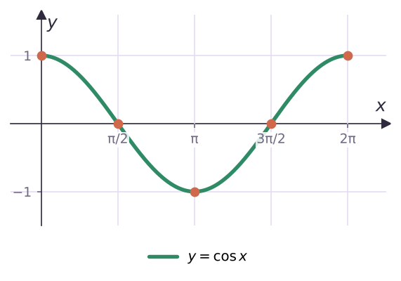
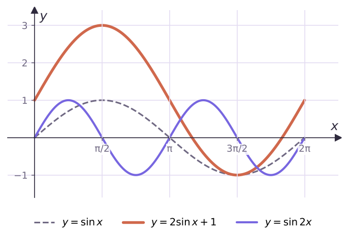

Теория
Периодичность сильно упрощает работу: функцию достаточно изучить на одном отрезке длиной в период, а потом «размножить» результат. План такой:
- взять отрезок длиной в период, например [0; 2π];
- изучить свойства функции на нём с помощью единичной окружности;
- построить график на этом отрезке;
- сдвинуть построенный кусок на 2πn вправо и влево.
Функция y = sin x на отрезке [0; 2π]
sin x — ордината точки окружности. Пусть точка проходит окружность против часовой стрелки, от поворота на 0 до поворота на 2π, и следи, как меняется её высота:
- от 0 до π/2 точка поднимается: синус возрастает от 0 до 1;
- от π/2 до 3π/2 точка опускается: синус убывает от 1 до −1;
- от 3π/2 до 2π снова поднимается: синус возрастает от −1 до 0.
Нули на [0; 2π]: 0, π, 2π. Синус положителен на (0; π) и отрицателен на (π; 2π). Наибольшее значение 1 — при x = π/2, наименьшее −1 — при x = 3π/2.
![y = sin x на [0; 2π]: пять опорных точек 0, π/2, π, 3π/2, 2π](assets/fig/mal21_sin0.png)
Сдвигая этот кусок на 2πn, получаем график на всей прямой. Его называют синусоидой.

Функция y = cos x
cos x — абсцисса точки. На [0; π] точка движется влево — косинус убывает от 1 до −1; на [π; 2π] движется вправо — возрастает от −1 до 1. Нули: π/2 и 3π/2. Наибольшее значение 1 — при x = 0 и 2π, наименьшее −1 — при x = π.

График косинуса называют косинусоидой. Так как cos x = sin(x + π/2) (пример 2 из § 18), косинусоида — это синусоида, сдвинутая на π/2 влево. Графики синуса и косинуса — одинаковые фигуры.

Свойства на всей прямой
| Свойство | y = sin x | y = cos x |
|---|---|---|
| Область определения | R | R |
| Область значений | [−1; 1] | [−1; 1] |
| Главный период | 2π | 2π |
| Нули | πn | π/2 + πn |
| > 0 | (2πn; π + 2πn) | (−π/2 + 2πn; π/2 + 2πn) |
| < 0 | (π + 2πn; 2π + 2πn) | (π/2 + 2πn; 3π/2 + 2πn) |
| Чётность | нечётная | чётная |
| Возрастает | [−π/2 + 2πn; π/2 + 2πn] | [π + 2πn; 2π + 2πn] |
| Убывает | [π/2 + 2πn; 3π/2 + 2πn] | [2πn; π + 2πn] |
| Наибольшее значение 1 | при π/2 + 2πn | при 2πn |
| Наименьшее значение −1 | при −π/2 + 2πn | при π + 2πn |
Здесь везде n ∈ Z. Таблицу не нужно заучивать — каждую строку можно «прочитать» с графика или с единичной окружности.
«Синус возрастает» — неверно без уточнения промежутка: синус возрастает только на отрезках вида [−π/2 + 2πn; π/2 + 2πn]. Сравнивать значения по монотонности можно, лишь когда оба аргумента лежат на одном таком отрезке.
Разбор примеров
Сравни: а) sin 20° и sin 21°; б) cos 5 и cos 5,1; в) sin 40° и cos 40°.
а) 20° и 21° лежат в [−90°; 90°], где синус возрастает: sin 20° < sin 21°.
б) π ≈ 3,14 < 5 < 5,1 < 2π ≈ 6,28 — на [π; 2π] косинус возрастает: cos 5 < cos 5,1.
в) sin 40° < sin 45° = √2/2, а cos 40° > cos 45° = √2/2 (на [0°; 180°] косинус убывает). Значит, sin 40° < cos 40°.
Возможно ли равенство sin α = 2 sin 31°?
sin 31° > sin 30° = 1/2, поэтому 2 sin 31° > 1. Синус больше 1 не бывает — равенство невозможно.
Найди наибольшее и наименьшее значения y = sin x на отрезке [π/6; 4π/3].
На [π/6; π/2] синус возрастает, на [π/2; 4π/3] убывает. Наибольшее — в точке поворота: sin π/2 = 1. Наименьшее — на одном из концов: sin π/6 = 1/2, sin 4π/3 = −√3/2. Значит, наименьшее −√3/2.
Построй графики y = 2 sin x + 1 и y = sin 2x. Найди их области значений и главные периоды.
y = 2 sin x + 1: растяжение от оси Ox в 2 раза и сдвиг вверх на 1. Значения от 2 · (−1) + 1 = −1 до 2 · 1 + 1 = 3: E = [−1; 3], период 2π.
y = sin 2x: сжатие к оси Oy в 2 раза (§ 6). E = [−1; 1], период π.

Задачи урока
Реши в тетради. Ответы разберём на занятии.
Из учебника
- № 21.1, 21.2 — Промежутки возрастания и убывания.
- № 21.3, 21.4 — Сравнение значений синуса и косинуса.
- № 21.5, 21.6 — Построение графиков с помощью преобразований.
- № 21.13 — Возможно ли равенство.
Тест к уроку
Домашнее задание
№ 21.2, 21.4, 21.6, 21.8 из учебника письменно. Построить в тетради синусоиду и косинусоиду на отрезке [−2π; 2π] (π = 6 клеток) и подписать нули, максимумы и минимумы.